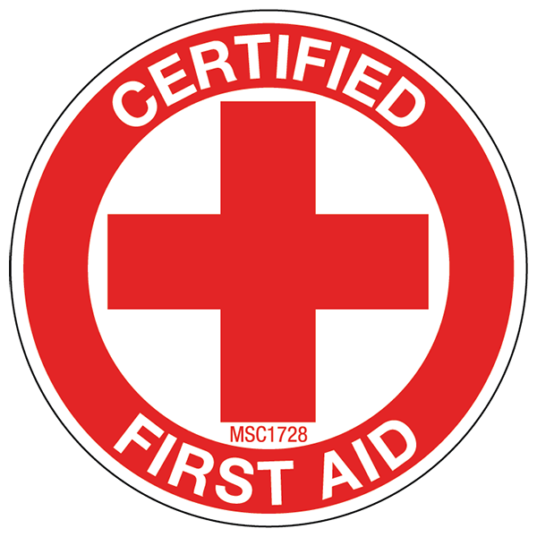
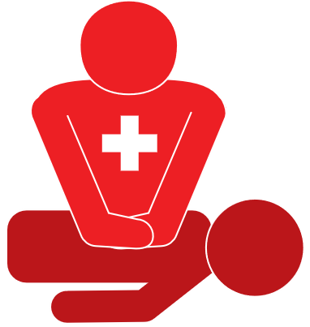
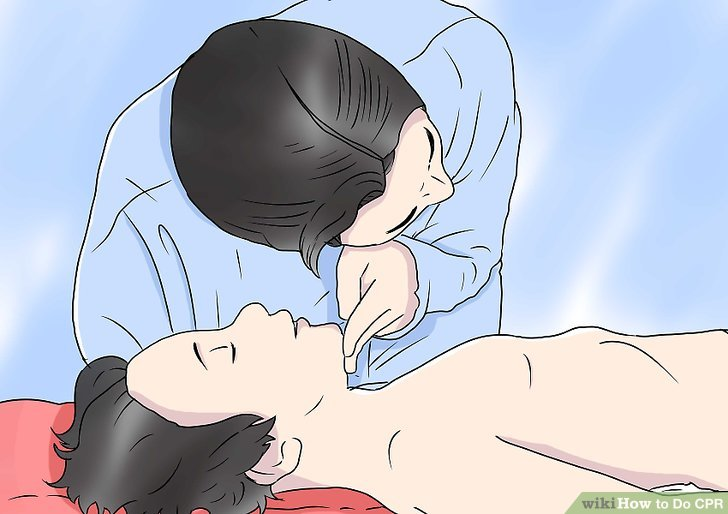

Practical First-Aid
For
Emergency Situations
Welcome

First-Aid
Web Mission
You are meant to be one of many last lines of defense before the ambulence arrives to carry off the person(s) you were rescuing. Your ability to perform these techniques to the best you can could be the defining factors of life or death.
Techniques
CPR (Cardiopulmonary Resuscitation)
Definition
Step 1:
Check for (Un)Responsiveness
- Shake victim's shoulders and loudly ask if they are okay. If given no response, check for pulse and or breathing while someone calls emergency services.
- This version of CPR focuses only on chest compressions and is ideal for those without formal CPR training, or for those uncertain of their abilities.
Step 2:
Call Emergency Services
- If two or more people are at the scene, one dials for help while the other performs CPR.
- If a person is unresponsive because of suffocation (from drowning, for example), then it's recommended to immediately begin CPR for one minute and then call your local emergency number.
- If the victim is a child between the ages of one to eight years, perform five cycles of chest compressions and rescue breathing before calling Emergency Services if you are the only person available. This should take roughly two minutes.
- When you call emergency services, the dispatcher could instruct you on how to perform CPR.
Step 3:
Lay Victim on Their Back
- Once on his back, kneel next to the person's neck and shoulders so you have better access to his chest and mouth.
- Keep in mind that you should not move the person if you suspect he may have suffered a significant head, neck, or spinal injury. In this case, moving him is life-threatening and should be avoided, unless emergency help won't be available for a long time (a few hours or more).
Step 4:
Rapid Compression Down Center of Chest
- Use your upper body weight and strength, not just your arm strength, and push straight down on the chest.
- Your chest compressions should cause the person's chest to depress at least 2 inches (5 cm). Push hard and understand that it is likely you will break the person's ribs. This is extremely common, and you shouldn't stop compressions even if you think this has happened.
- Chest compressions are difficult and it is fine to let others take over when you are tired.
- Continue until person becomes responsive or until the medical team arrives to take over.